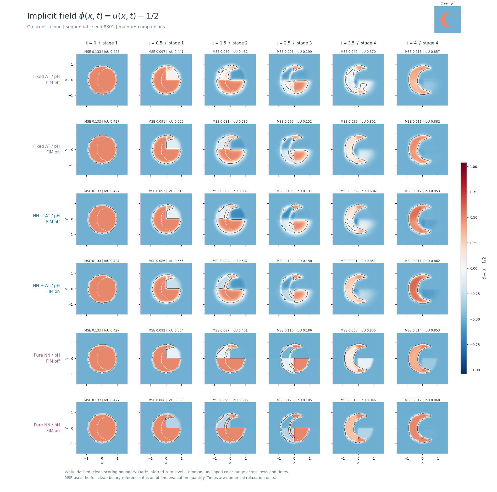

Static results
Six saved cases from the FIM benchmark. Open a case to inspect field snapshots, signed error, Hamiltonian slices, and Fisher information.
Six saved cases from the FIM benchmark. Open a case to inspect field snapshots, signed error, Hamiltonian slices, and Fisher information.